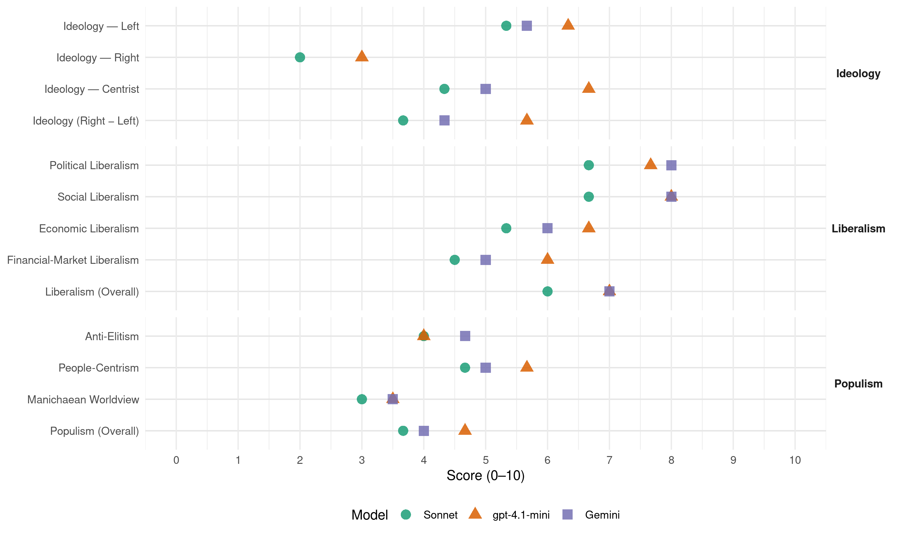

(Ireland, 2016)
manifesto_id 53620_201602
Get full text: This site shows derived annotations and short verbatim quotes only. The full manifesto text is © Manifesto Project / WZB — obtain it via manifesto-project.wzb.eu using the manifesto_id above.
Headline scores
| Dimension | Sonnet | gpt-4.1-mini | Gemini |
|---|---|---|---|
| Populism (Overall) | 3.7 | 4.7 | 4.0 |
| Anti-Elitism | 4.0 | 4.0 | 4.7 |
| People-Centrism | 4.7 | 5.7 | 5.0 |
| Manichaean Worldview | 3.0 | 3.5 | 3.5 |
| Ideology (Right − Left) | 3.7 | 5.7 | 4.3 |
| Liberalism (Overall) | 6.0 | 7.0 | 7.0 |
| Political Liberalism | 6.7 | 7.7 | 8.0 |
| Social Liberalism | 6.7 | 8.0 | 8.0 |
| Economic Liberalism | 5.3 | 6.7 | 6.0 |
| Financial-Market Liberalism | 4.5 | 6.0 | 5.0 |
Evidence per dimension
Economic Liberalism
Gemini · score 7.0 · verified · chunk 1
“support enterprise”
Create decent jobs & support enterprise
Gemini · score 5.0 · verified · chunk 2
“financial incentives to private sector employers”
The Wage Subsidy Scheme provides financial incentives to private sector employers to hire people with a disability.
Gemini · score 6.0 · verified · chunk 3
“provide greater competition to banks”
Credit Union mortgage model to provide greater competition to banks in the mortgage lending
gpt-4.1-mini · score 7.0 · verified · chunk 1
“Support a publicly funded health care system”
Fianna Fáil believes in a publicly funded, publicly delivered health care service, one that emphasises patient care above structures. This means leadership rather than spin, reform rather than revolution and building on the strengths of the service and the hard work of its staff.
gpt-4.1-mini · score 6.0 · verified · chunk 2
“We will increase current funding to Higher Education institutions by €100m”
A strong higher education system is vital in producing high quality research and producing the skilled graduates needed to attract investment. We will: Increase current funding to Higher Education institutions by €100m. Increase capital funding via a €296 million package in research and capital investment.
gpt-4.1-mini · score 7.0 · verified · chunk 3
“attract investment across the whole island of Ireland”
Utilising this existing experience and building on the work of Intertrade Ireland and Invest NI offers an opportunity to attract investment across the whole island of Ireland.
Sonnet · score 6.0 · verified · chunk 1
“removing barriers to trade”
Fianna Fáil supports the principle of removing barriers to trade. This is essential for Ireland to be successful.
Sonnet · score 5.0 · verified · chunk 2
“access to a top quality education should be determined by merit”
Central to our policy is the principle that access to a top quality education should be determined by merit and hard work, not ability to pay.
Sonnet · score 5.0 · verified · chunk 3
“attract international investment”
Launch Intertrade Ireland, IDA, Invest NI Joint Initiatives to attract international investment
Financial-Market Liberalism
Gemini · score 6.0 · verified · chunk 1
“state enterprise bank”
Create a fully licenced state enterprise bank
Gemini · score 4.0 · verified · chunk 3
“Empower the central bank to intervene”
Reduce Variable Mortgage Interest Rates Empower the central bank to intervene to force banks to
gpt-4.1-mini · score 6.0 · verified · chunk 1
“Protect our Corporate Tax Rate & re-build the Eurozone”
We will: Protect and fully maintain our 12.5% Corporate Tax Rate Our vision for Ireland is a thriving economy with a strong multinational sector and vibrant indigenous industry. Our corporate tax rate is a vital part of Ireland’s attractiveness to Foreign Direct Investment and driving on our indigenous industries.
gpt-4.1-mini · score 6.0 · verified · chunk 3
“mobilise part of these funds for direct social housing provision”
Fianna Fáil will work with credit unions and the central bank to mobilise part of these funds for direct social housing provision.
Sonnet · score 5.0 · verified · chunk 1
“completion of a more ambitious banking union”
We will push for the completion of a more ambitious banking union including a common regulation, deposit insurance and resolution mechanism.
Sonnet · score 4.0 · verified · chunk 3
“Empower the central bank to intervene”
Empower the central bank to intervene to force banks to reduce excessive variable interest rates
Political Liberalism
Gemini · score 8.0 · verified · chunk 1
“Reform the Oireachtas”
Protect and develop our national language ………………………… 95Reform the Oireachtas ………………………………………………………….. 96
Gemini · score 8.0 · verified · chunk 2
“reform the Oireachtas to make it fit”
Implement a “21st Century Oireachtas” reform initiative We will reform the Oireachtas to make it fit for purpose in 21st century
Gemini · score 8.0 · verified · chunk 3
“strengthen its independence of government”
Orders for Dáil business to strengthen its independence of government. Ensure that chairpersons of
gpt-4.1-mini · score 8.0 · verified · chunk 1
“Legislate to protect children from Cyber Bullying”
Legislate to make cyber bullying a specific criminal offence and work with the Special Rapporteur on Child Protection to establish new protocols for social media sites operating in Ireland to deal with bullying.
gpt-4.1-mini · score 7.0 · verified · chunk 2
“We will: Fully implement the Lansdowne Road agreement”
We will: Fully implement the Lansdowne Road agreement. -Target future pay agreements on low to middle income earners. Repeal the Financial Emergency Measures in the Public Interest Acts over the next two years and return to normal industrial relations mechanisms, in relation to setting pay and conditions.
gpt-4.1-mini · score 8.0 · verified · chunk 3
“strengthen its independence of government”
Revamp Standing Orders for Dáil business to strengthen its independence of government. Ensure that chairpersons of all committees are allocated between groups on the basis of the d’Hondt proportional allocation process.
Sonnet · score 6.0 · verified · chunk 1
“Reform the Oireachtas”
Give local people power over local decisions … Reform the Oireachtas … Build a strong all Ireland community
Sonnet · score 7.0 · verified · chunk 2
“21st Century Oireachtas” reform initiative”
We will reform the Oireachtas to make it fit for purpose in 21st century Ireland through a number of comprehensive measures
Sonnet · score 7.0 · verified · chunk 3
“Revamp Standing Orders for Dáil business”
Revamp Standing Orders for Dáil business to strengthen its independence of government.
Liberalism (Overall)
Gemini · score 7.0 · verified · chunk 1
“support enterprise”
Create decent jobs & support enterprise
Gemini · score 7.0 · verified · chunk 2
“reform the Oireachtas to make it fit”
Implement a “21st Century Oireachtas” reform initiative We will reform the Oireachtas to make it fit for purpose in 21st century
Gemini · score 7.0 · verified · chunk 3
“strengthen its independence of government”
Orders for Dáil business to strengthen its independence of government. Ensure that chairpersons of
gpt-4.1-mini · score 7.0 · verified · chunk 1
“Legislate to protect children from Cyber Bullying”
Legislate to make cyber bullying a specific criminal offence and work with the Special Rapporteur on Child Protection to establish new protocols for social media sites operating in Ireland to deal with bullying.
gpt-4.1-mini · score 7.0 · verified · chunk 2
“We will: Fully implement the Lansdowne Road agreement”
We will: Fully implement the Lansdowne Road agreement. -Target future pay agreements on low to middle income earners. Repeal the Financial Emergency Measures in the Public Interest Acts over the next two years and return to normal industrial relations mechanisms, in relation to setting pay and conditions.
gpt-4.1-mini · score 7.0 · verified · chunk 3
“strengthen its independence of government”
Revamp Standing Orders for Dáil business to strengthen its independence of government. Ensure that chairpersons of all committees are allocated between groups on the basis of the d’Hondt proportional allocation process.
Sonnet · score 6.0 · verified · chunk 1
“fiscal, banking and transfer union”
Create a fiscal, banking and transfer union to prevent a future Eurozone crisis — Fight in Europe to fully maintain our 12.5% corporate Tax Rate
Sonnet · score 6.0 · verified · chunk 2
“reform the Oireachtas to make it fit for purpose”
We will reform the Oireachtas to make it fit for purpose in 21st century Ireland through a number of comprehensive measures
Sonnet · score 6.0 · verified · chunk 3
“Propose a referendum to introduce a mixed list/PR-STV”
Propose a referendum to introduce a mixed list/PR-STV system. Launch a reform of cabinet to separate government from parliament
Anti-Elitism
Gemini · score 4.0 · verified · chunk 1
“ignoring the lessons of the past”
stated, this government is ignoring the lessons of the past in its fiscal policies.
Gemini · score 6.0 · verified · chunk 2
“cynical addition to the government’s list of broken promises”
Freeze student fees A particularly cynical addition to the government’s list of broken promises was the increase in student fees
Gemini · score 4.0 · verified · chunk 3
“deliberately tilted in favour of the banks”
personal insolvency legislation which is deliberately tilted in favour of the banks. We are committed
gpt-4.1-mini · score 7.0 · verified · chunk 1
“Fine Gael and Labour’s divisive and failing policies”
Will we move forward together or will we become more unequal and unfair? Fianna Fáil believes that there is a fairer way than Fine Gael and Labour’s divisive and failing policies. This manifesto shows how we can create an Ireland which serves all of its people - which helps families and communities to thrive and supports them with strong public services.
gpt-4.1-mini · score 2.0 · verified · chunk 2
“The Fine Gael/ Labour government has allowed this far reaching sense of alarm to grow”
The strong sense of community that has served Ireland so well is being jeopardised by the scourge of criminality and fear. The Fine Gael/ Labour government has allowed this far reaching sense of alarm to grow through their downgrading of An Garda Síochána and gross mismanagement of justice in Ireland.
gpt-4.1-mini · score 3.0 · verified · chunk 3
“indifference of this government”
Fianna Fáil always has been and remains, fundamentally committed to achieving the historic unity of our island in a single state. Unlike the indifference of this government, the issue of Northern Ireland will never be downgraded by Fianna Fáil.
Sonnet · score 5.0 · verified · chunk 1
“politics-first approach of this government”
The politics-first approach of this government has meant that claiming credit for the work of others has taken precedence over addressing new problems.
Sonnet · score 4.0 · verified · chunk 2
“cynical addition to the government’s list of broken promises”
A particularly cynical addition to the government’s list of broken promises was the increase in student fees which has inflicted great hardship
Sonnet · score 3.0 · verified · chunk 3
“failure of Fine Gael and Labour’s housing policy”
The disastrous failure of Fine Gael and Labour’s housing policy is causing immense damage throughout the country. This is an area they ignored for five years
Ideology — Centrist
Gemini · score 5.0 · verified · chunk 1
“An Ireland for all”
committed to building “An Ireland for all” where economic growth
gpt-4.1-mini · score 8.0 · verified · chunk 1
“An Ireland for all”
Fianna Fáil is committed to building “An Ireland for all” where economic growth is felt across the nation, families can own their own home, streets are safe , hard work is rewarded and society takes care of its young, vulnerable and older people.
gpt-4.1-mini · score 5.0 · verified · chunk 2
“Create a new Cabinet Minister for Community Support and Development”
We will tackle crime head on and protect community services. We will: Keep homes and communities safe Increase An Garda Síochána to 15,000 members and Garda Reserve to 2,500 Impose mandatory sentences for assaults on elderly people Put in place tougher sentences and electronic tagging for burglars Implement a Victim’s Surcharge to make criminals pay for their crimes Establish a Community Services Guarantee for all citizens Create a new Cabinet Minister for Community Support and Development Set specific measures for Education, Health and Transport services across Ireland
gpt-4.1-mini · score 7.0 · verified · chunk 3
“people should be allowed to vote on more radical reforms”
In addition, we believe that the people should be allowed to vote on more radical reforms of our political system which would bring it more into line with other comparable democracies and deliver a more expert, effective and independent government.
Sonnet · score 5.0 · verified · chunk 1
“fairer way than Fine Gael and Labour”
Fianna Fáil believes that there is a fairer way than Fine Gael and Labour’s divisive and failing policies.
Sonnet · score 4.0 · verified · chunk 2
“reform rather than revolution”
This means leadership rather than spin, reform rather than revolution and building on the strengths of the service
Sonnet · score 4.0 · verified · chunk 3
“An Ireland for all”
Our goal to eliminate long term homelessness by 2021 reflects a driving ambition that building ‘An Ireland for all’ must include all citizens
Ideology — Left
Gemini · score 6.0 · verified · chunk 1
“more unequal and unfair”
Will we move forward together or will we become more unequal and unfair?
Gemini · score 6.0 · verified · chunk 2
“support low income students who may otherwise”
Fully retain the undergraduate maintenance grant system to support low income students who may otherwise be put off by the costs.
Gemini · score 5.0 · verified · chunk 3
“deliberately tilted in favour of the banks”
personal insolvency legislation which is deliberately tilted in favour of the banks. We are committed
gpt-4.1-mini · score 7.0 · verified · chunk 1
“Create a fairer welfare system”
We will: Create a fairer welfare system Raise the state pension by €30 to €263 a week Increase working age payments by €10 Boost carers allowance, disability benefit, invalidity & blind pension by a further €10 per week top-up Expand Credit Union’s role in providing affordable community finance
gpt-4.1-mini · score 7.0 · verified · chunk 2
“access to a top quality education should be determined by merit and hard work, not ability to pay”
Central to our policy is the principle that access to a top quality education should be determined by merit and hard work, not ability to pay. We will: Fully retain the undergraduate maintenance grant system to support low income students who may otherwise be put off by the costs.
gpt-4.1-mini · score 5.0 · verified · chunk 3
“increase funding to the Peace & Reconciliation fund”
-We will increase funding to the Peace & Reconciliation fund by €2.3m to help build better relations between divided communities.
Sonnet · score 6.0 · verified · chunk 1
“progressive approach”
In contrast Fianna Fáil is proposing a progressive approach. We want to implement a range of proposals to both reduce taxes on low and middle-income earners
Sonnet · score 5.0 · verified · chunk 2
“publicly funded health care system”
Fianna Fáil believes in a publicly funded, publicly delivered health care service, one that emphasises patient care above structures.
Sonnet · score 5.0 · verified · chunk 3
“new €5.4bn Social Housing building programme”
Establish a new €5.4bn Social Housing building programme for urban and rural Ireland
Ideology (Right − Left)
Gemini · score 5.0 · verified · chunk 1
“An Ireland for all”
committed to building “An Ireland for all” where economic growth
Gemini · score 5.0 · verified · chunk 2
“support low income students who may otherwise”
Fully retain the undergraduate maintenance grant system to support low income students who may otherwise be put off by the costs.
Gemini · score 3.0 · verified · chunk 3
“deliberately tilted in favour of the banks”
personal insolvency legislation which is deliberately tilted in favour of the banks. We are committed
gpt-4.1-mini · score 7.0 · verified · chunk 1
“Fianna Fáil is committed to building “An Ireland for all””
Fianna Fáil is committed to building “An Ireland for all” where economic growth is felt across the nation, families can own their own home, streets are safe , hard work is rewarded and society takes care of its young, vulnerable and older people.
gpt-4.1-mini · score 5.0 · verified · chunk 2
“We will tackle crime head on and protect community services”
We will tackle crime head on and protect community services. We will: Keep homes and communities safe Increase An Garda Síochána to 15,000 members and Garda Reserve to 2,500 Impose mandatory sentences for assaults on elderly people Put in place tougher sentences and electronic tagging for burglars Implement a Victim’s Surcharge to make criminals pay for their crimes Establish a Community Services Guarantee for all citizens
gpt-4.1-mini · score 5.0 · verified · chunk 3
“people should be allowed to vote on more radical reforms”
In addition, we believe that the people should be allowed to vote on more radical reforms of our political system which would bring it more into line with other comparable democracies and deliver a more expert, effective and independent government.
Sonnet · score 5.0 · verified · chunk 1
“An Ireland for all”
This election is a fundamental choice about the sort of Ireland, we as a people, can create. Will we move forward together as a country or will we become more unequal and unfair?
Sonnet · score 3.0 · verified · chunk 2
“Target future pay agreements on low to middle income earners”
We will be guided by the following principles in any future negotiations… Target future pay agreements on low to middle income earners.
Sonnet · score 3.0 · verified · chunk 3
“ordinary working families across the country”
An Ireland for all means ensuring this simple ambition is available to ordinary working families across the country.
Ideology — Right
gpt-4.1-mini · score 3.0 · verified · chunk 1
“Protect our Corporate Tax Rate & re-build the Eurozone”
We will: Protect and fully maintain our 12.5% Corporate Tax Rate Our vision for Ireland is a thriving economy with a strong multinational sector and vibrant indigenous industry. Our corporate tax rate is a vital part of Ireland’s attractiveness to Foreign Direct Investment and driving on our indigenous industries.
gpt-4.1-mini · score 3.0 · verified · chunk 2
“Impose mandatory sentences for assaults on elderly people”
We will tackle crime head on and protect community services. We will: Keep homes and communities safe Increase An Garda Síochána to 15,000 members and Garda Reserve to 2,500 Impose mandatory sentences for assaults on elderly people Put in place tougher sentences and electronic tagging for burglars
gpt-4.1-mini · score 3.0 · verified · chunk 3
“tackle sectarianism”
-We will increase funding to the Peace & Reconciliation fund by €2.3m to help build better relations between divided communities. (xiii) Develop the Cross Border Crime Agency The MI5/PSNI report on the continued existence of the Provisional IRA and the involvement of its members in criminality is a sharp reminder of the need to address the scourge of paramilitarism.
Sonnet · score 2.0 · verified · chunk 1
“Protect our Corporate Tax Rate”
Protect our Corporate Tax Rate & rebuild the Eurozone — We will not accept or implement any increase in Ireland’s Corporation Tax rate.
Sonnet · score 2.0 · verified · chunk 2
“re-unification of this island as a single state”
As a party whose core objective remains the re-unification of this island as a single state we are fully committed to strengthening cross border links
Sonnet · score 2.0 · verified · chunk 3
“strengthen the right to live in rural Ireland”
Fianna Fáil is committed to defending local people’s right to build and own their own home in their own community.
Manichaean Worldview
Gemini · score 3.0 · verified · chunk 1
“divisive and failing policies”
Fianna Fáil believes that there is a fairer way than Fine Gael and Labour’s divisive and failing policies.
Gemini · score 4.0 · verified · chunk 2
“neglect of communities is a defining feature”
gross mismanagement of justice in Ireland. The neglect of communities is a defining feature of this government.
gpt-4.1-mini · score 5.0 · mixed · chunk 1
“Fine Gael and Labour have limited funding opportunities and damaged a research system”
Fianna Fáil established Science Foundation Ireland (SFI) in 1999 - this was a game changer and grew the reputation of Irish scientific research. Support for science and innovation is essential to ensure that Ireland is a high-value economy supporting good jobs in the future. For the past five years the emphasis has been on publicity for ministers over a credible policy covering a diverse area. Fine Gael and Labour have limited funding opportunities and damaged a research system which had previously achieved immense progress.
gpt-4.1-mini · score 3.0 · verified · chunk 2
“The Fine Gael/ Labour government has inflicted great damage”
Over the past five years this government has inflicted great damage on the ability of An Garda Síochána to protect our communities . Ministerial policies have directly undermined the principle that Gardaí should be as close as possible to the communities they serve .
gpt-4.1-mini · score 4.0 · verified · chunk 3
“scourge of sectarianism remains deeply embedded”
The scourge of sectarianism remains deeply embedded in marginalised communities in Northern Ireland. Symptomatic of the paralysis and crisis that has engulfed the political bodies of Northern Ireland, sectarianism continues to blight far too many communities.
Sonnet · score 4.0 · verified · chunk 1
“divisive and failing policies”
Fianna Fáil believes that there is a fairer way than Fine Gael and Labour’s divisive and failing policies.
Sonnet · score 3.0 · verified · chunk 2
“clear choice in this election”
There is a clear choice in this election between those who will continue with damaging measures and Fianna Fáil
Sonnet · score 2.0 · verified · chunk 3
“they denied there was any problem at all”
they denied there was any problem at all until it had been allowed to develop to the level of an emergency.
People-Centrism
Gemini · score 5.0 · verified · chunk 1
“serves all of its people”
create an Ireland which serves all of its people - which helps families
Gemini · score 5.0 · verified · chunk 2
“responsive to the needs of the people”
Make public services more user friendly Public services should be responsive to the needs of the people they serve.
Gemini · score 5.0 · verified · chunk 3
“the people should be allowed to vote”
we believe that the people should be allowed to vote on more radical reforms of
gpt-4.1-mini · score 8.0 · verified · chunk 1
“An Ireland for all”
Fianna Fáil is committed to building “An Ireland for all” where economic growth is felt across the nation, families can own their own home, streets are safe , hard work is rewarded and society takes care of its young, vulnerable and older people.
gpt-4.1-mini · score 3.0 · verified · chunk 2
“Ireland has a resilient community spirit and a deep, abiding sense of pride in our nation”
Ireland has a resilient community spirit and a deep, abiding sense of pride in our nation . This strength has helped us endure and bounce back from the challenges we have faced as a country . However, to thrive communities need to be safe and to have access to core state services.
gpt-4.1-mini · score 6.0 · verified · chunk 3
“An Ireland for all”
“An Ireland for all” means a lasting, deep co-operation between both sides of the border building towards a peaceful, consensual unification of our land.
Sonnet · score 6.0 · verified · chunk 1
“An Ireland for all”
Fianna Fáil is committed to building ‘An Ireland for all’ where economic growth is felt across the nation, families can own their own home
Sonnet · score 4.0 · verified · chunk 2
“An Ireland for all”
“An Ireland for all” will ensure strong public services are built with dedicated public servants.
Sonnet · score 4.0 · verified · chunk 3
“An Ireland for all”
An Ireland for all means ensuring this simple ambition is available to ordinary working families across the country.
Populism (Overall)
Gemini · score 4.0 · verified · chunk 1
“divisive and failing policies”
Fianna Fáil believes that there is a fairer way than Fine Gael and Labour’s divisive and failing policies.
Gemini · score 5.0 · verified · chunk 2
“cynical addition to the government’s list of broken promises”
Freeze student fees A particularly cynical addition to the government’s list of broken promises was the increase in student fees
Gemini · score 3.0 · verified · chunk 3
“deliberately tilted in favour of the banks”
personal insolvency legislation which is deliberately tilted in favour of the banks. We are committed
gpt-4.1-mini · score 7.0 · verified · chunk 1
“Fianna Fáil is committed to building “An Ireland for all””
Fianna Fáil is committed to building “An Ireland for all” where economic growth is felt across the nation, families can own their own home, streets are safe , hard work is rewarded and society takes care of its young, vulnerable and older people.
gpt-4.1-mini · score 3.0 · verified · chunk 2
“The Fine Gael/ Labour government has inflicted great damage”
Over the past five years this government has inflicted great damage on the ability of An Garda Síochána to protect our communities . Ministerial policies have directly undermined the principle that Gardaí should be as close as possible to the communities they serve .
gpt-4.1-mini · score 4.0 · verified · chunk 3
“indifference of this government”
Fianna Fáil always has been and remains, fundamentally committed to achieving the historic unity of our island in a single state. Unlike the indifference of this government, the issue of Northern Ireland will never be downgraded by Fianna Fáil.
Sonnet · score 5.0 · verified · chunk 1
“recovery belongs to all our people”
Ireland has come through a long and difficult recession because of the skills and dedication built up by its people over generations. The recovery belongs to all our people.
Sonnet · score 3.0 · verified · chunk 2
“neglect of communities is a defining feature”
The neglect of communities is a defining feature of this government. In 2011 Fine Gael and Labour ended the 20-year status
Sonnet · score 3.0 · verified · chunk 3
“disastrous failure of Fine Gael and Labour”
The disastrous failure of Fine Gael and Labour’s housing policy is causing immense damage throughout the country.
Social Liberalism